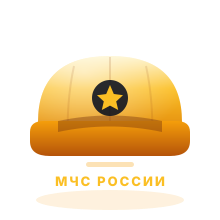
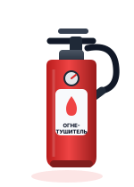
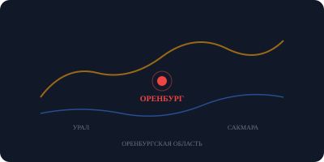

Правила поведения
в опасных ситуациях
Российская Федерация · Оренбургская область

Что такое чрезвычайная ситуация?
Природные ЧС
Наводнения, землетрясения, лесные пожары, ураганы, засухи — стихийные бедствия, вызванные природными явлениями.
Техногенные ЧС
Аварии на промышленных объектах, транспорте, выбросы опасных веществ, аварии на ЭС и трубопроводах.
Социальные ЧС
Террористические акты, эпидемии, массовые беспорядки, конфликты и другие угрозы обществу.
ЧС — это обстановка на определённой территории, возникшая в результате аварии, опасного природного явления, катастрофы, которые могут повлечь человеческие жертвы и ущерб здоровью людей или окружающей среде.
Природные чрезвычайные ситуации
Наводнения и паводки
Характерны для Оренбургской области в весенний период при таянии снега и дождях. Реки Урал, Сакмара, Ик выходят из берегов.
Лесные и степные пожары
Летом в Оренбуржье часто наблюдается высокая пожароопасность из-за жары и засухи. Степные пожары распространяются стремительно.
Ураганы и смерчи
Сильные ветры до 40 м/с и более наблюдаются в регионе. Смерчи редки, но возможны в тёплый период.
Аномальные морозы и гололёд
Зимой температура в Оренбургской области опускается до −35 °C и ниже. Гололёд опасен для пешеходов и водителей.
Статистика по России
Техногенные чрезвычайные ситуации
Химические аварии
Выброс аварийно химически опасных веществ (АХОВ) на предприятиях. В регионе работают Орскнефтеоргсинтез и «Газпром добыча Оренбург».
Транспортные аварии
ДТП — одна из главных причин гибели людей в России. Через Оренбургскую область проходят трассы М-5 «Урал» и Р-239.
Аварии на энергетике
Отключения электроэнергии, аварии на ЛЭП, котельных. Зимой это критично: риск обморожения и размораживания систем.
Аварии на водопроводе
Прорывы труб в зимний период — частое явление в Оренбуржье. Затопление подвалов, проседание грунта.
Пожарная безопасность
Обнаружив пожар — звони 101 или 112
Сообщи адрес, что горит, есть ли люди в здании. Не паникуй, говори чётко.
Эвакуируйся без паники
Пользуйся лестницами, не лифтом. При задымлении — ползи или иди, прикрыв рот мокрой тканью.
Не открывай окна и двери
Приток воздуха усилит горение. Закрой двери, чтобы замедлить распространение огня.
Не возвращайся в горящее здание
Спасение имущества не стоит жизни. Дожидись прибытия пожарных.

Эвакуация при ЧС
Слушай указания
Следуй командам спасателей, полиции, учителей. Не противоречь и не задерживай других.
Возьми документы и аптечку
Паспорт, деньги, лекарства, зарядка для телефона. Набери бутылку воды и сухой паёк.
Помоги детям и пожилым
Дети, пожилые и люди с ограничениями не могут быстро двигаться. Поддержи их и иди вместе.
Не теряй времени
Эвакуация должна быть быстрой. Не собирай вещи, не возвращайся за забытым. Каждая секунда на счету.
План эвакуации
В каждом здании есть план эвакуации. Изучи его заранее: где выходы, где огнетушители, где собираться после выхода.
Точка сбора обычно находится на расстоянии от здания — на улице, на площадке. Не покидай её без разрешения спасателей.
экстренных служб
Защита органов дыхания
Респиратор
Используй при задымлении, химических выбросах, пыли. Классы защиты: FFP1, FFP2, FFP3. Для дыма — минимум FFP2.
Влажная ткань
Если нет респиратора — прикрый рот и нос мокрым платком, полотенцем, одеждой. Это задержит часть вредных частиц.
Противогаз
При химических авариях используй противогаз. Проверь срок годности и фильтры. Не используй противогаз с истёкшим сроком.
Правила использования
Респиратор должен плотно прилегать к лицу. Проверь герметичность: закрой рукой клапан выдоха и попробуй вдохнуть — воздух не должен проходить.
Меняй фильтры согласно инструкции. Одноразовые респираторы не используй повторно.
Действия при землетрясении
Упади на пол и укройся
Встань под прочный стол, кровать. Держись за ножки. Не стой в проёме и у окон.
Не пользуйся лифтом
Могут отключить электричество. Двигайся по лестнице, прикрыв голову руками или сумкой.
Выйди на открытое пространство
Подальше от зданий, деревьев, ЛЭП. Ляг на землю, прикрой голову руками.
Будь готов к повторным толчкам
Афтершоки могут быть сильнее первого. Не возвращайся в здание до официального разрешения.
Магнитуда землетрясений
Оренбургская область находится в зоне с низкой сейсмической активностью, но землетрясения магнитудой до 5 возможны.
Социальные угрозы и терроризм
Будь внимателен
Обращай внимание на подозрительных людей, бесхозные предметы, сумки, пакеты в общественных местах.
Сообщи о подозрительном
Немедленно сообщи о находке в полицию по телефону 102 или 112. Не трогай предмет сам!
При угрозе — эвакуируйся
Покинь здание по лестницам. Не пользуйся лифтом. Не задерживайся и не оглядывайся.
Не снимай и не распространяй слухи
Не снимай действия спецслужб и не передавай непроверенную информацию: это мешает операции и создаёт панику.
Экстремизм — это преступление
Пропаганда экстремизма, распространение запрещённой литературы — уголовная ответственность по ст. 280 и 282 УК РФ.
Никогда не соглашайся на предложения перенести чужой груз, сумку через границу или выполнить «простое поручение» незнакомцев.
Что делать: не трогай бесхозный предмет, отойди на безопасное расстояние и сообщи по телефону 102 или 112.
экстренных служб
Безопасность на воде и в быту
Безопасность на воде
- Купайся только в оборудованных местах
- Не заплывай за буйки и дальше 10 м от берега
- Не ныряй в незнакомых местах
- Не купайся в состоянии алкогольного опьянения
- Не оставляй детей у воды без присмотра
- При ЧС на воде — зови на помощь, не паникуй
Безопасность в быту
- Проверяй исправность розеток и проводки
- Не оставляй без присмотра включённые приборы
- Держи ножи и лезвия в недоступном для детей месте
- Не используй газовую плиту для обогрева
- Храни лекарства и бытовую химию в плотно закрытых упаковках
- При утечке газа — не включай свет, открой окно, позвони 112
Первая медицинская помощь
Порядок действий при ЧП
Убедись, что тебе ничто не угрожает
Вызови скорую помощь — 103 или 112
Окажи первую помощь в пределах своих знаний
Не оставляй пострадавшего одного до приезда медиков
Ключевые навыки
30 нажатий + 2 вдоха. При остановке дыхания.
При кровотечениях — давящая повязка или жгут с указанием времени.
Обездвижь конечность, не пытайся вправлять кости сам.
Приложи лёд через ткань на 15-20 минут.
Радиационная безопасность
Что такое радиация
Ионизирующее излучение — невидимое излучение, которое повреждает клетки. Источники: аварии на АЭС, медицинское оборудование, природные источники.
Защита: время, расстояние, экран
Меньше времени рядом с источником. Больше расстояния. Используй свинцовые экраны, одежду.
Йодная профилактика
При угрозе радиации принимай йодид калия. Он защищает щитовидную железу. Дозировку определяет врач.
Дозы облучения
В Оренбургской области нет АЭС; радиационный фон контролируется, в том числе с учётом трансграничного влияния Казахстана.
Психологическая первая помощь
Успокой человека
Говори спокойно, медленно. Не кричи и не обвиняй. Обними или возьми за руку, если это уместно.
Слушай без осуждения
Дай человеку выговориться. Не перебивай, не давай советов сразу. Просто будь рядом.
Помоги дышать
Попроси сделать 4 медленных вдоха и 4 выдоха. Это снижает уровень стресса и помогает вернуть контроль.
Обратись к специалистам
Психологическая помощь — это нормально. Если человек не справляется — позвони на горячую линию психологической помощи: 8-800-333-44-34 (бесплатно, круглосуточно).
Признаки острого стресса
Тремор рук, учащённое сердцебиение, потливость, тошнота, паника, ступор. Эти реакции нормальны в ненормальной ситуации.
Психологическая травма может проявиться не сразу. Если через неделю после события человек не приходит в себя — обратитесь к психологу.
Особенности Оренбургской области
Климат
Резко континентальный: жаркое лето (+40 °C) и холодная зима (до −40 °C). Засухи и суховеи — частое явление.
Паводки
Реки Урал, Сакмара, Ик, Самара ежегодно разливаются весной. Зоны возможного затопления — поймы Урала, Сакмары и их притоков.
Промышленность
Оренбургский газохимический комплекс, нефтепереработка. Зона экологического риска — юго-восток области.
Пожароопасность
Степная зона — высокий риск степных и лесных пожаров в летний период.

Оренбургская область — самая южная область Уральского федерального округа. Площадь: 123 702 км², население: ~1,8 млн.
Экстренные службы
Итоги и выводы
Знания — лучшая защита
Знание правил безопасности спасает жизни. Изучай инструкции и не пренебрегай предупреждениями.
Планируй заранее
Имей дома аптечку, фонарь, документы в одном месте. Знай план эвакуации.
Помогай другим
В критической ситуации важно помочь близким и не растеряться. Взаимовыручка — залог выживания.
Вызывай помощь вовремя
Не стесняйся звонить в экстренные службы. Лучше перестраховаться, чем опоздать.